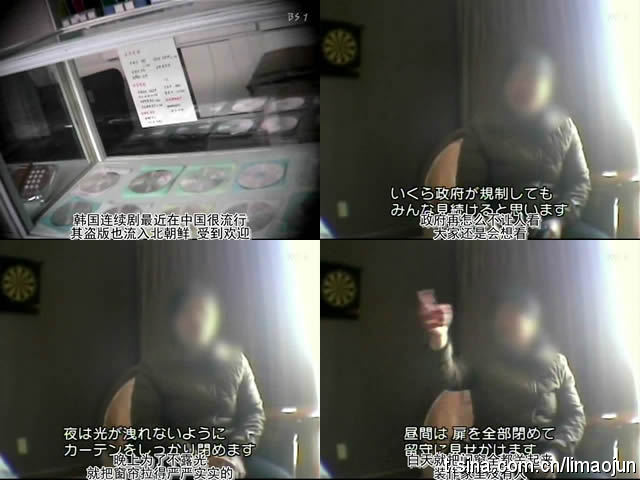

昨天看NHK的纪录片《中国支配下的北朝鲜经济》中有一段，朝鲜民众已经看够了朝鲜本土拍摄的电视剧，于是来中国买盗版的韩国电视剧和电影拿到朝鲜去观看，可是政府不让看，但是政府再怎么不让看，民众还是想看，我不知道是该笑还是怎么的，中国的盗版让朝鲜看到了韩国，彻底让朝鲜人民桑心了。 
还是黑龙江农垦学院附近，我在黑龙江科技学院斜对面的重庆鸡公煲吃完饭出来走到柏林四季小区门口的时候，一个给旅店拉客的男人对另一个给旅店拉客的男人说：“你看那女孩儿，昨天就跟一个男的去那个旅店了，今天换了个男的 又来了。。。。”